The Challenge
Sometimes we just need to talk through what we're feeling. Therapy helps, but not all of us can access or afford it. Can an app on your phone do the trick? Our friends at YR Media reported on apps that use artificial intelligence to power therapy bots in their news story Could Your Next Therapist Be Your Phone? Use this guide to make one of your own.
Click "Connect Your App" below to start building your app or go directly to the Therapist BOT tutorial below.
Connect Your App
Therapist BOT (Level: Intermediate)
Introduction
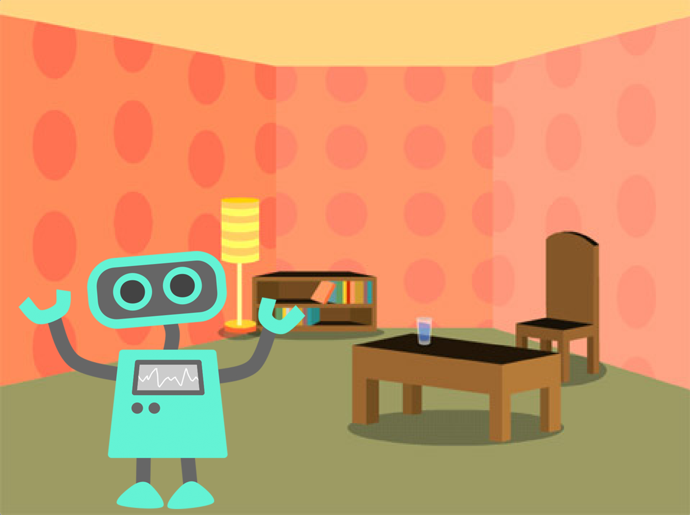This project is a vastly simplified version of a famous program called ELIZA that was developed at MIT in the early 1960s by Professor Joseph Weizenbaum. The BOT program engages in a "conversation" with the user, in which it mimics a non-directive style of psychotherapy. In non-directive psychotherapy, originally developed in the 1940's by the American counseling psychologist Carl Rogers, the therapist never engages in giving expert advice to the patient and never gives direction to the conversation, but through active listening and asking questions, allows the patient to gain insight into their predicament and find their own way to healing.
Introduction: Example Chat
Here is a possible sequence of exchanges that our Therapist BOT might have with the user:
BOT: Hello there! I hope you are well today. What can I do for you?
USER: my father hates me
BOT: Why do you say that your father hates you
USER: he always favors my brother
BOT: You seem to think that he always favors your brother
USER: my mother and I are very close
BOT: Can you explain why your mother and you are very close
USER: she helps me with my school work
BOT: Please tell me more
USER: bye
BOT: Be well. Have a nice day!
Introduction: Response Linguistic Structure
When the user enters a statement, the BOT responds in one of two ways:
- With a randomly chosen hedge such as "Please tell me more"; or
- By changing some key words in the user's statement (such as "I" and "my" becoming "you" and "your") and appending this to a qualifier chosen randomly. For example "I always loved my sister." when person-changed with a qualifier becomes "Can you explain why you always loved your sister?"
(Coloring is done for emphasis)
You can click on the images to enlarge them and click and drag the top frame of the enlarged images to move them around as needed.
The User Interface 1
Now you will build the User Interface (UI). Here is what the final interface will look like.
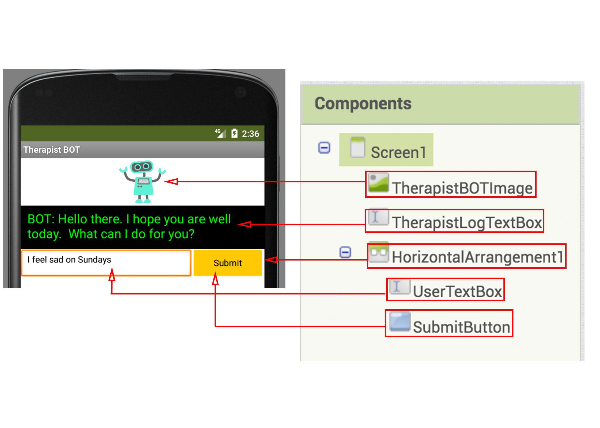To center everything horizontally in Screen1, change its AlignHorizontal property to "Center".
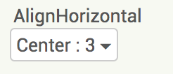First, you will add the BOT image.
Drag and drop an Image component (User Interface palette), rename the component as "TherapistBOTImage" and set the "therapistBOT.png" included in the starter file as its Picture property. You may need to restrict the Height and the Width of the Image component to a small value like "100 pixels" to make sure the image fits. You can also choose to upload your own image for the BOT.
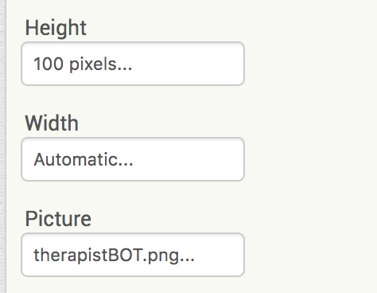The User Interface 2
Next, the textbox where the user will write their comments.
Drag and drop a TextBox component (User Interface palette) and rename the component as "UserTextBox". Change the Hint property to "Enter your response".

The User Interface 3
Next, the button to submit user's comments.
Drag and drop a Button component (User Interface palette), change its Text property to "Submit" and rename the component "SubmitButton". Adjust its Width, BackgroundColor and Shape properties as you wish.
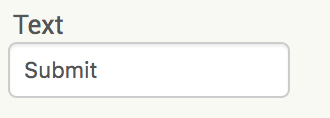The User Interface 4
Finally, the therapy log where the user comments and BOT responses will be recorded.
Drag and drop a ListView component (User Interface palette) and rename the component “TherapyLogListView”.
Blocks Editor
Now you will give functionality to the User Interface (UI) and endow the BOT some intelligence. Switch to the Blocks editor.

Initializations
Create a variable named hedges which will be a list containing three possible hedge sentences:
- "Please tell me more."
- "Many of my patients tell me the same thing."
- "Please continue."
You can always add more hedges to this list. In fact, it is one of the suggestions in the “Expand Your App” tab below.
Initializations
Create a variable named qualifiers which will be a list containing three possible qualifiers to precede a person-changed version of the user’s input sentence:
- "Why do you say that "
- "You seem to think that "
- "Can you explain why "
As the qualifiers will precede a reply generated by the program, be sure to add spaces at the end of each text string in the qualifiers list.
You can always add more qualifiers to this list. In fact, it is one of the suggestions in the “Expand Your App” tab below.
Dictionary Data Structure
A dictionary in Computer Science is a data structure used to store key-value pairs much like a real-world dictionary where words and their definitions are stored. Unlike in the real-world dictionary, the dictionary data structure used in Computer Science can hold arbitrary keys associated with arbitrary values. These arbitrary keys and values can be pretty much anything: letters, words, multi-word strings, numbers, as well as mixed combinations of all these.
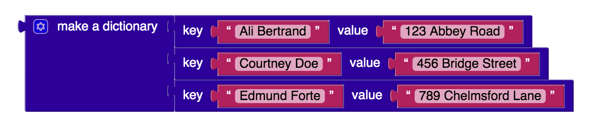Replacements Dictionary
Create a variable named replacements which will be a dictionary of key-value pairs indicating how person change replacements should be made as the BOT responds to the comment made by the user.
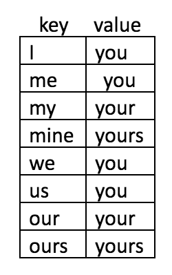Note that these replacements change first-person to second-person but not vice versa. You can add these second-person to first-person replacements also to the dictionary. In fact, it is one of the suggestions in the “Expand Your App” tab below.
Screen1 Initialization
When Screen1 initializes, display a welcoming message like "Hello there! I hope you are well today. What can I do for you?" on the Therapy Log.
Do this coding on your own. If you get stuck and would like some hints, click on the hint button below.
replace all Block 1
In this programming project one of the most crucial tasks to accomplish will be to properly convert user's statements, replacing first-person pronouns to second-person pronouns etc. This is in general a non-trivial programming task but luckily there is a replace all block which can help.
This powerful text block needs a dictionary of replacements for its mappings input and a sentence as its text input (such as the text typed by the user). You also need to select a preference order: the default longest string first order or dictionary order.
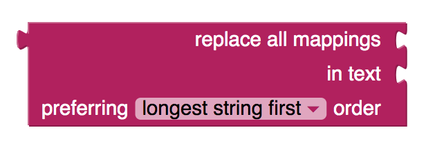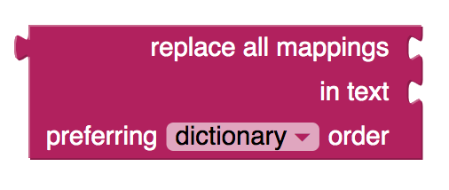replace all Block 2
To understand the effect of each of these order preferences, examine the cases below. In the first case, the preferred order is dictionary order
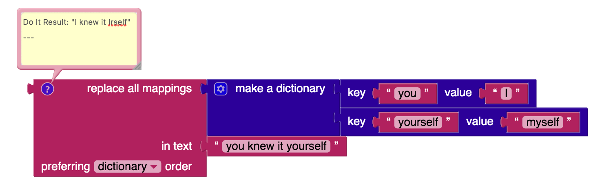In the sentence:
"you knew it yourself"
the word "yourself" contains the string "you" in it.
Because “you” appears first in the dictionary to be replaced with "I", “yourself” becomes “Irself” and the resulting sentence is the meaningless:
"I knew it Irself".
(color is used for emphasis)
replace all Block 3
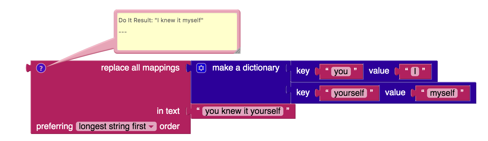However, if you choose the longest string first order , then the longer string "yourself" is first replaced with "myself" and then next the shorter string "you" is replaced with "I" leading to a meaningful replacement of
"you knew it yourself"
with
"I knew it myself".
(color is used for emphasis)
So, it is best to stick to the default longest string first order which makes more sense in the current context. That way, the longest key in the dictionary is first sought in the sentence and replaced if found, then the next longest key is sought and replaced if found, etc.
Can you think of any context where the dictionary order would be preferable?
reply Procedure
Define a procedure named reply with a return value which takes a sentence as its input:
- initialize a local variable named response to the empty string
- pick a random number 1 through 4 and
- if the number is 1 set response to a random item from the list hedges
- else set response to a random item from the list qualifiers appended with a person changed modification of the sentence using the replace all block.
- return response
Do this coding on your own. If you get stuck and would like some hints, click on the hint button below.
Submit Button
When the user presses the Submit button:
- add the user comments (preceded with "USER: ") and then add the program's reply (preceded by "BOT: ") to these comments in the Therapy Log.
- re-display the updated Therapy log
- clear the UserTextBox
Do this coding on your own. If you get stuck and would like some hints, click on the hint button below.

Test your App
Now use AI Companion to test your app thoroughly. Make sure you are using the latest AI Companion (version 2.58 or higher) so that dictionaries and blocks such as replace all will work.

Congratulations, you have created your first artificially intelligent autonomous BOT that chats.
Note: During your testing, you may realize that your BOT can use a lot of improvements. Please consider some of the extensions discussed below in the "Expand Your App" section.
Expand Your App
- Create a button to delete the chat log.
- Make the Therapist BOT speak its responses in addition to writing them in the chat log. Make sure that your mobile device has this capability. (Hint: TextToSpeech component)
- Add a speak button that allows the user to speak to the Therapist BOT rather than just type. Make sure that your mobile device has this capability. (Hint: SpeechRecognizer component)
- Have the Therapist BOT make a disclaimer at the very start of the session so the user knows that it is not a certified healthcare professional.
- Give the user the ability to terminate the therapy session by using a key word such as "Bye" and have the BOT respond to the user with something like "Be well. Have a nice day!" before terminating the application.
- Add more hedges and qualifiers, also adjusting their probabilities of being chosen.
- Deal with cases such as when the user says "you are a bad therapist" (second-person to first-person pronoun changes) and other cases not yet covered, including capitalizations, like "You yourself told me that". Test the Therapist BOT in a variety of conversations to make sure that it is able to change persons correctly in its responses.
- You may have noticed that some words in the replacements dictionary may be contained in other words and may be replaced inappropriately. For example the word “I” is contained in the word “Incomplete” and when the replacements in the dictionary are done with “I” becoming “you”, one would get the meaningless “youncomplete”. You can avoid some of these by adding spaces to the strings in the replacements dictionary such as making the key : value pair “I “ : “you “ (there is space character at the end of each word) so that “I” is processed only when used as a singleton word not as a letter that is part of other words.
- Have the Therapist BOT offer some empathetic responses when the user says something like "I am sad" or "My father passed away last year".
- If the conversation gets too dark (some key flag words like "depressed" etc. used), have the Therapist BOT provide the user with some Mental Health help information and refer to a hotline etc.
- Give the Therapist BOT some memory of the conversation and have it refer to earlier topics discussed in the conversation such as "Earlier you mentioned that..."
- Your awesome ideas here ...
About Youth Mobile Power
A lot of us spend all day on our phones, hooked on our favorite apps. We keep typing and swiping, even when we know the risks phones can pose to our attention, privacy, and even our safety. But the computers in our pockets also create untapped opportunities for young people to learn, connect and transform our communities.
That’s why MIT and YR Media teamed up to launch the Youth Mobile Power series. YR teens produce stories highlighting how young people use their phones in surprising and powerful ways. Meanwhile, the team at MIT is continually enhancing MIT App Inventor to make it possible for users like you to create apps like the ones featured in YR’s reporting.
Essentially: get inspired by the story, get busy making your own app!

The YR + MIT collaboration is supported in part by the National Science Foundation. This material is based upon work supported by the National Science Foundation under Grant No. (1906895, 1906636). Any opinions, findings and conclusions or recommendations expressed in this material are those of the author(s) and do not necessarily reflect the views of the National Science Foundation.
Check out more apps and interactive news content created by YR here.